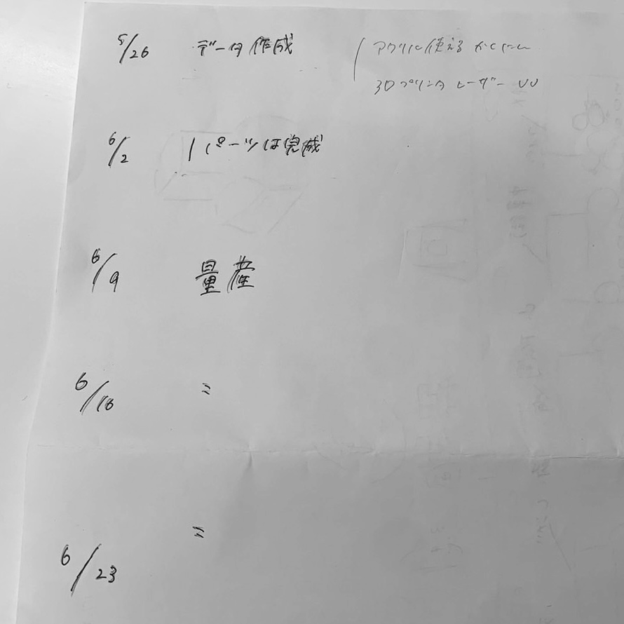
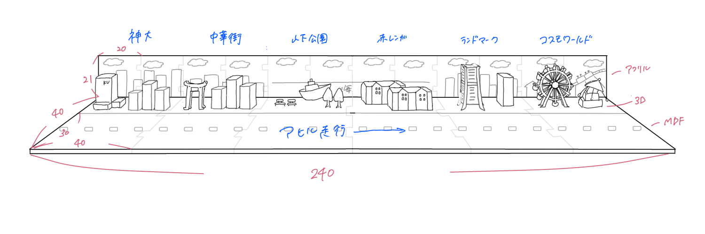
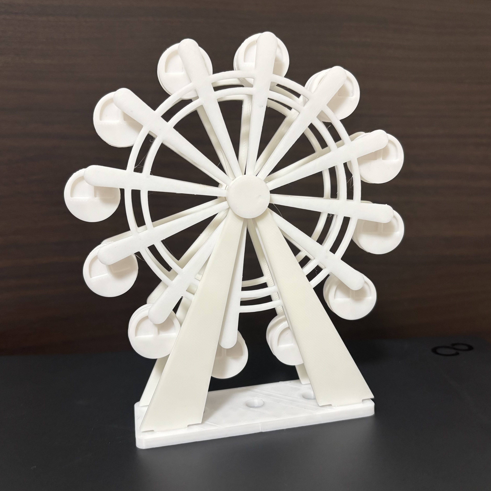
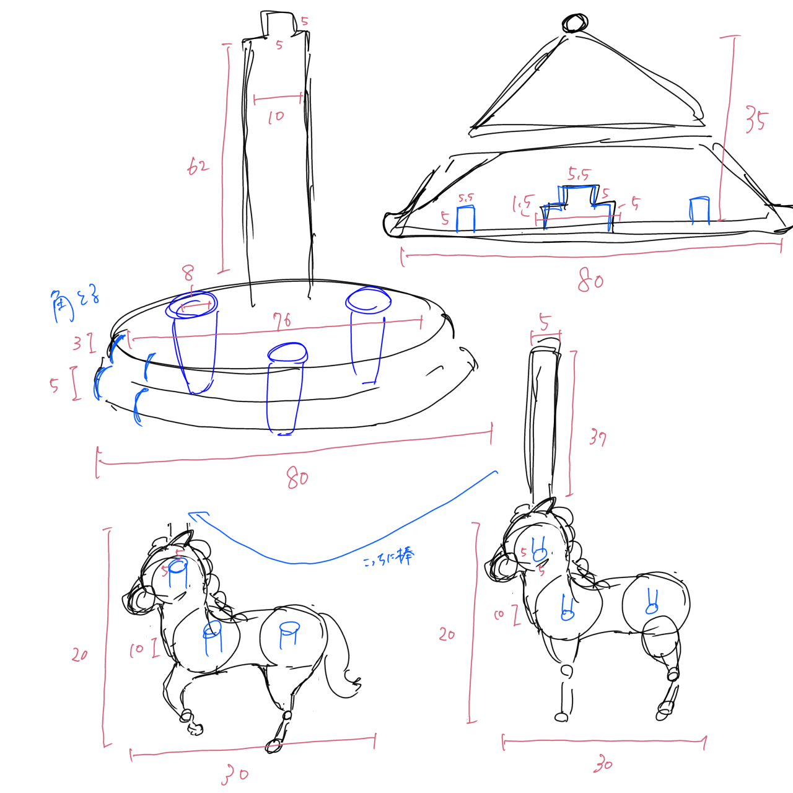
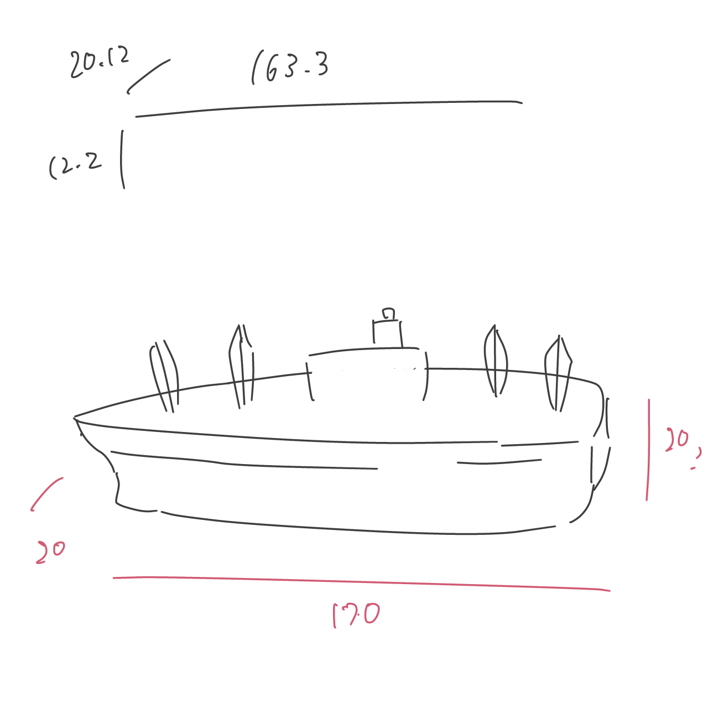
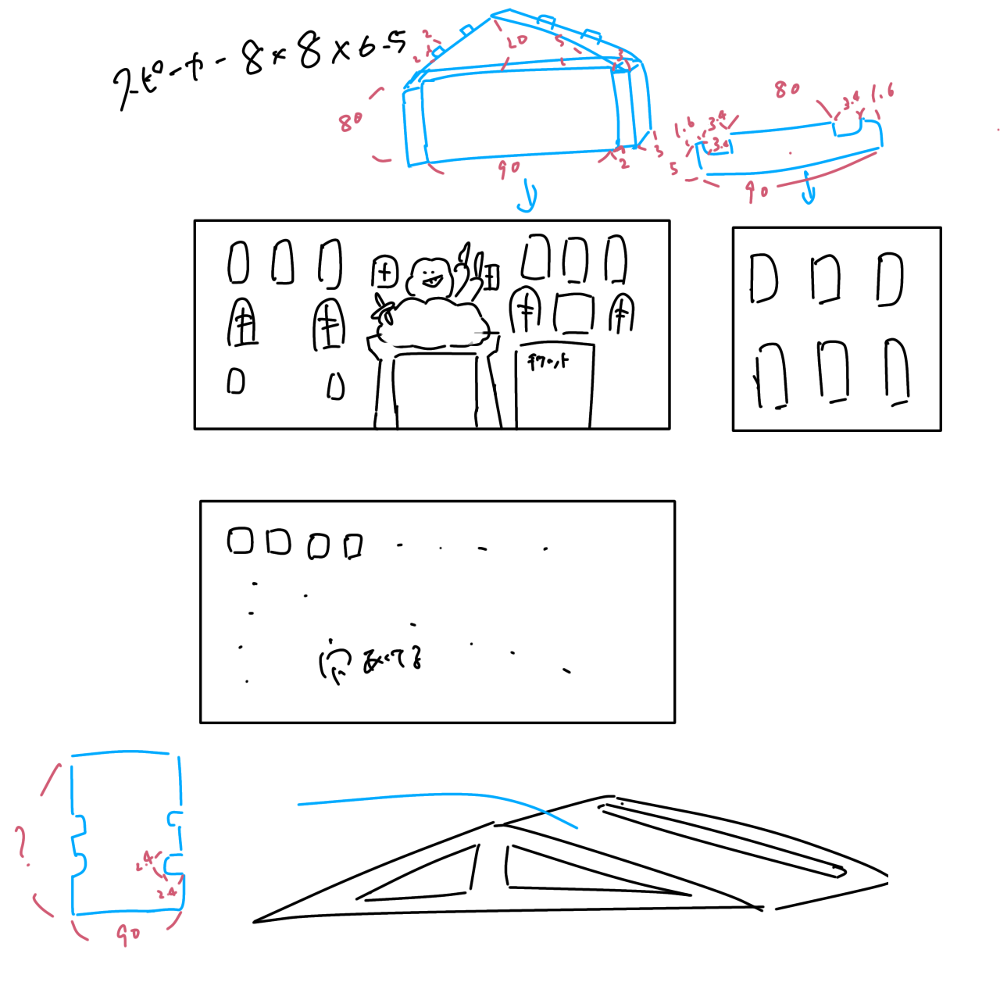
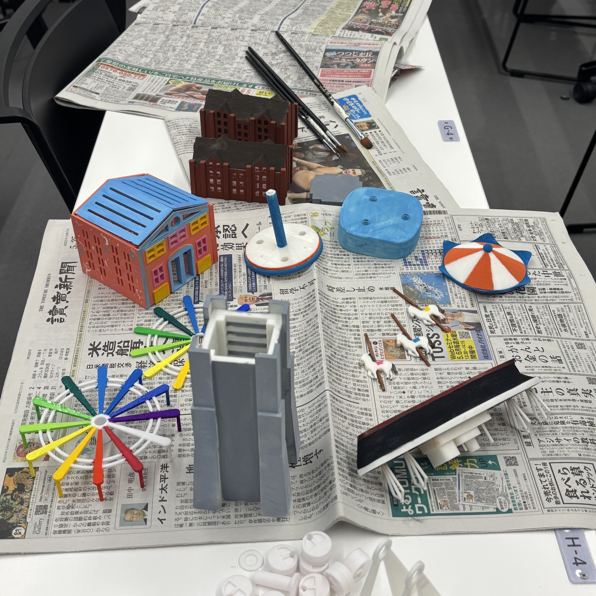

最終課題 プロジェクトノート
世界一のアヒルを作ろう【背景班】
私たちは世界一のアヒルを制作することになりました。
その中で私は背景を担当します。

プロセスメモ
■＝考えないといけないこと、疑問など
●＝具体的にやること
→＝やったこと
■背景のデザイン決める
→

■使う素材
●どこに何の素材を使う？
→土台にMDF、奥の壁にアクリル板、立体の建造物に3Dプリンター
■ファブラボに使える素材・機材の確認
●素材は用意されているもので足りるのか、機材の幅の確認
→足りる、レーザーUVを使う場合幅に注意、→パズル型にする
■データ作成
●3Dプリンターのデータ作成
●レーザーのデータ作成
●UVのデータ作成
■3Dオブジェ制作
●観覧車
→

デジファブ最終課題
で制作した観覧車のデータを少し変更して制作した。
土台
足
ゴンドラ
骨組み１
骨組み２
部品１
部品２
●メリーゴーランド●ライトを入れる場所を作る
→ライトの電池部分がきれいに隠れるよう、土台部分に連結する形でカバーを作成した

土台
ライト用
馬１
馬２
屋根１
屋根２
●山下公園氷川丸
→

船
部品
参考
Dokugaku閲覧室トマソン隊018氷川丸
●スピーカー隠し用建物●音が聞こえやすいようにたくさん穴を開ける
→スピーカーの大きさを考慮した結果、比率の関係でコスモワールドにありそうだけどない建物が出来上がった。

壁前
壁後ろ
壁左右
屋根
参考
カード迷路 「ぐるり森大冒険」〜本物はど〜れだ！？の巻〜
Dr.エドガーの呪いのコレクション 「恐怖の館」
ビックリ・ふしぎ館 「コスモパニック」
カーニバルストリート
●マリンタワー
●山下公園柵
■3Dオブジェにどうやって色をつけるのか
→アクリル絵の具で色がつけられる
水が多いとムラになりやすいので注意が必要
